グラデーションとは
- ある異なる2色の色や濃淡が滑らかに連続して変化してゆく表現のこと
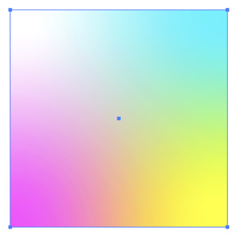
グラデーションは、以下のような方法で作成できます。
グラデーションパネル – 塗りつぶし＆線グラデーション
グラデーションツール – 塗りつぶしグラデーション
グラデーションメッシュツール – カスタムの不規則なグラデーション
ブレンドツール – 実験的なグラデーションやオブジェクト
グラデーションパネル
- 正方形を描く
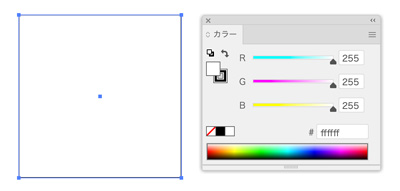
- 「グラデーション」パネルを表示して、初期グラデーションを選択
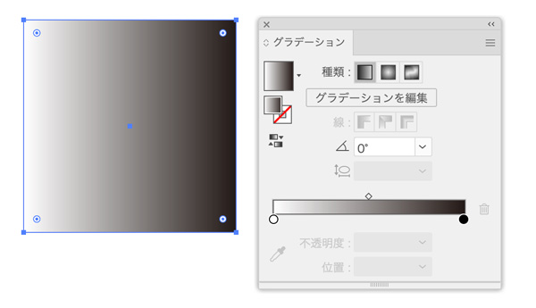
開始色
- グラデーションの始まりの色
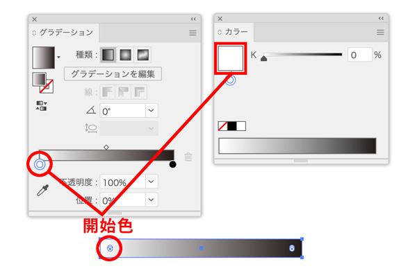
終了色
- グラデーションの終わりの色
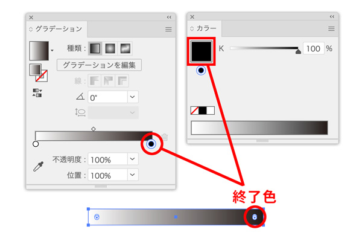
開始色と終了色を変更
- カラーポイントをダブルクリックして「カラーパレット」を表示
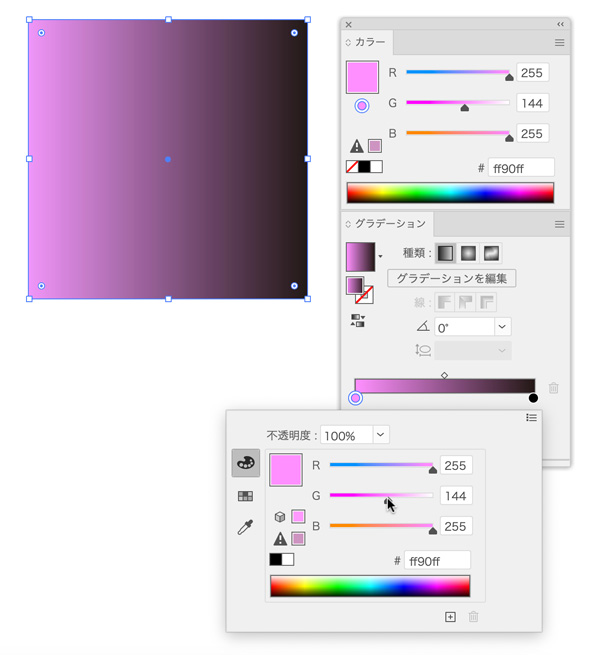
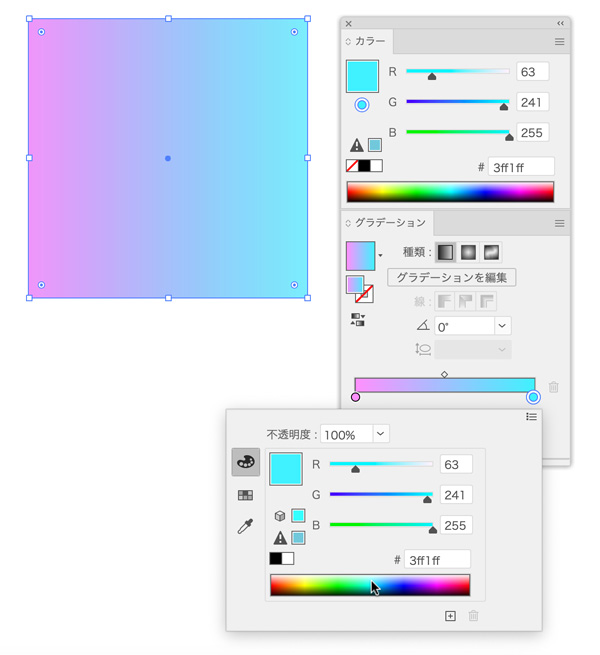
グラデーションの方向を変更
- 「グラデーションツール」を選択
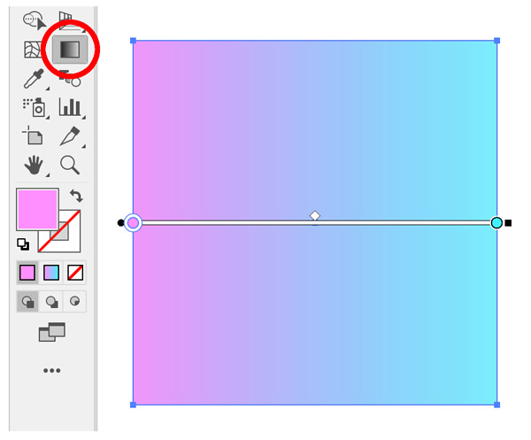
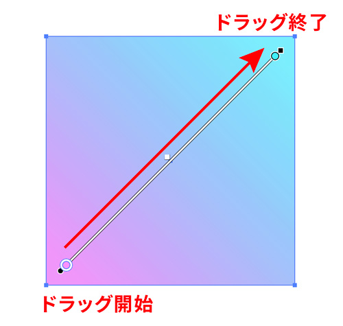
グラデーションを作成
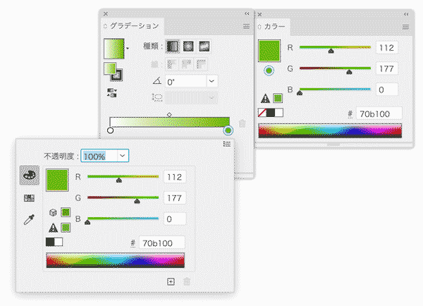
線形（リニア）
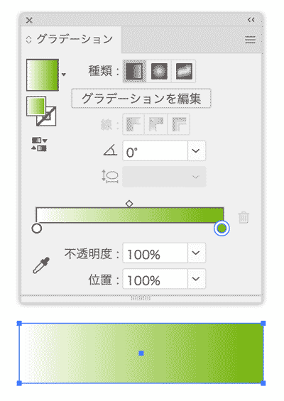
円形
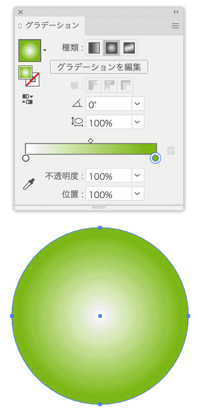
グラデーションの方向を決める
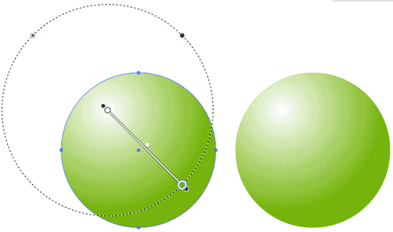
《グラデーションのポイント》
- 開始色と終了色を決める
- 線形か円形の種類を選択する
- 開始点の位置から終了点の位置までプレス&ドラッグをする
グラデーションを使ってイラストを描いてみる
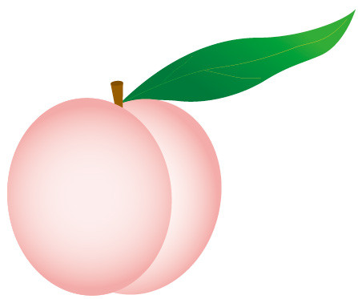
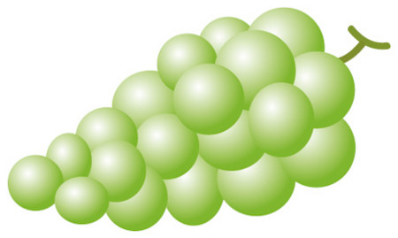